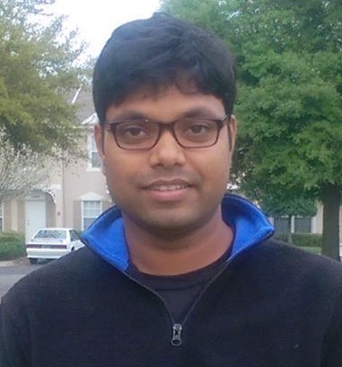

I am a Postdoctoral Scholar in the Electrical
and Computer Engineering Department at University of California, San Diego. I
am affiliated with the Mobile Systems
Design Lab at UCSD. My research spans the areas of
Internet-of-Things (IoT), Wireless Networks, Distributed Computing,
Federated Learning, Adaptive Video Processing, and Cyber Physical and
Autonomous Systems. My recent research focus has been on the
Information Autonomy in resource constrained Autonomous Systems, e.g.,
Unmanned Aerial Vehicles (UAV), and Collaborative Computing over
edge-cloud for connected vehicles for smart transportation. I am
interested in architecting flexible, adaptive and reconfigurable
distributed computing framework for vehicular edge computing systems
over heterogeneous Wireless Networks including 5G LTE, mmWave, WiFi,
D2D technologies.
I obtained my PhD in Computer Science
from University of California,
Irvine in 2019 and Masters in Computer Science from University of Texas
at Dallas in 2013. In Summer 2012, I was a visiting researcher in
the
WINLAB of Rutgers University, NJ. I
have had research internship
experience in Nokia Bell Labs, Huawei Research labs and Blackberry, as
well as prior work experience as a software engineer in Cisco Systems
and as a systems engineer at IBM.
Research Interests
- Internet of Things (IoT), Wirless Networks (5G, LTE, WiFi, D2D) ,
Autonomous Systems (UAV, Vehicles), Cyber Physical Systems,
Distributed Computing (Edge/Cloud), Video Streaming and Processing, Machine Learning.
Recent news
- 09/2019: Joined UCSD as a Postdoctral Scholar at Mobile
System Design Labs in ECE department
- 08/2019: Our Paper on Information Autonomy for UAV is
accepted in IEEE MILCOM 2019
- 08/2019: Successfully defended my PhD dissertation
- 08/2019: Our paper on Distilled-split Deep Neural Network
is accepted in ACM Mobicom HotEdgeVideo 2019
- 07/2019: Received NSF travel grant offer to attend ACM
SIGCOMM 2019 conference
- 06/2019: Our paper on Edge Computing for UAVs has been
accepted in IEEE SIGCOMM MAGESys 2019
- 05/2016: Presented Collaborative demo with UAV and Edge
Computing in the STIP workshop at UCSD
- 05/2019: Invited to present at 5G SDR Challenge in Air
Force Research Laboratory at Wrightborthers Inst., OH
- 10/2018: Presented a poster in the UCI ICS 50th
Anniversary Celebration at Beckman Center, Irvine, CA
- 07/2018: Our paper FlyNetSim: An Open source UAV Network
Simulator is accepted in ACM MSWiM 2018
- 05/2018: Received two student travel grants for ACM
SIGMETRICS 2018 and ACM MobiHoc 2018
- 04/2018: Received the People's Choice Award in the
Graduate Research Symposium at UC Irvine
- 04/2018: Our paper on Robust Multi-Path Communications for
UAVs has been accepted in IEEE SECON 2018
- 03/2018: Our
paper has been published in IEEE Transactions on
Cognitive Communications and Networking (TCCN)
- 02/2018: Our paper on eBPF based NFV has been accepted in
IEEE INFOCOM Workshops (INFOCOM SCAN 2018)
- 12/2017: Research featured in UCI
news, DoD
News and PC Magazine
- 11/2017: Our team "DeepEdge" participated
in DARPA Hackfest
2017 at NASA Ames Research Center, CA
- 02/2017: Our
paper on Network selection has been accepted in
IEEE INFOCOM Workshop (INFOCOM SCAN 2017)
- 09/2016: Our paper on Interference
management for Video transmission has been accepted in IEEE
ICNC 2017
- 08/2016: Received Third Best Poster Award in
Intern
Research Showcase in Huawei Research Labs, Santa Clara, CA
- 07/2016: Our paper on Cognitive
Interference Control in Urban IoT has been accepted in IEEE
Globecom2016
- 06/2016: Joined Huawei Research Lab, Santa
Clara, CA for Summer 2016 internship
- 06/2016: Received the Best Poster Award in UCI
Computer Science
Research Showcase